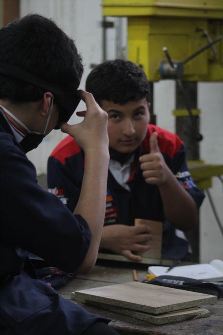

Riesgos Físicos
Existen distintos riesgos físicos.
- El primero y más común es el ruido cuando genera una sensación
auditiva desagradable.
- Otro riesgo físico puede estar provocado por las vibraciones causadas por todo tipo de maquinaria.
Estas
vibraciones pueden afectar a la columna vertebral, a los abdominales, y ocasionar dolores de cabeza.
- La iluminación también puede producir deslumbramientos, fatiga y reflejos. Estos casos pueden
producir
un accidente, por lo que hay que vigilar con los tipos de lámparas y los niveles de luz.
- La temperatura y la humedad también pueden provocar efectos adversos a las personas si los valores
son
muy elevados o excesivamente bajos.
Solucion a los Riesgos Fisicos
Debemos protegernos con todas las medidas de seguridad posibles.
relizando cosas como:
- Limitar tiempos de exposición.
- Adecuado mantenimiento de equipos de.
trabajo.
- Vigilancia de la salud de los trabajadores.
expuestos.
- Establecer descansos cortos y.
frecuentes a lo largo de la jornada.
- Adoptar buenas posturas de trabajo.
- Los valores ideales en el trabajo son 21ºC y 50% de humedad.
Riesgos Ergonómicos
Las principales causas de los riesgos ergonómicos en el area tecnica de Ebanisteria,
son:
- las posturas inadecuadas
- levantar mucho peso
- estar muchas horas haciendo el mismo movimiento
Estos son algunos de los factores pueden causar daños físicos.
Solucion a los Riesgos Ergonomicos
Estos modos pretenden optimizar las capacidades de actuación preventiva de los trabajadores gracias a la
identificación de los riesgos y a la propuesta de soluciones técnicas prácticas y específicas a los
problemas ergonómicos del sector.A continuaacion se daran a conocer las recomendaciones de seguriodad
ergonómica:
- Identificar factores de riesgo relacionados con los trastornos músculoesqueléticos.
- Evaluar el nivel de riesgo para las diferentes zonas corporales (espalda, brazo, hombro, cuello,
muñecas…).
- Sugerir acciones para reducir el riesgo de exposición.
- Evaluar la efectividad de una intervención ergonómica.
- Formar a los usuarios sobre los riesgos en su puesto de trabajo.
Riesgos Psicosociales
Estos riesgos vienen ocasionados por factores, Consecuencias psicológicas, Reacciones de comportamiento
provocan:
- el estrés por el ritmo de trabajo
- la fatiga laboral
- una rutina muy monótona
- actitudes negativas
- irritación, preocupación
- tensión
- ansiedad
- alteraciones de la vida
social y familiar del individuo
- Síntomas percibidos y problemas de salud como tensión,
dolores musculares, disfunciones gástricas, síntomas
cardiovasculares, síntomas respiratorios, mayor
agresividad, tendencia a la depresión y a otras
neurosis de reacción.
- El estrés laboral, la falta de
formación, el trabajo a
destajo, la insatisfacción,
el trabajo mal organizado,
son factores adicionales a
unas condiciones de
trabajo peligrosas.
Solucion a los Riesgos Psicosociales

Para prevenir este tipo de riesgos es bueno cambiar de tarea o de horario de trabajo de vez en cuando.
Debemos tener un descanso de 15 minutos como mínimo a partir de las seis horas.
Estas medidas preventivas deben apoyarse en:
- Adecuar la carga y ritmo de trabajo a los
trabajadores.
- Fomentar estrategias de comunicación entre los
distintos niveles.
- Establecer sistemas de resolución de conflictos.
- Mejorar la motivación de las personas.
- Facilitar la cohesión interna del grupo.
- Potenciar la creatividad y capacidades de los
trabajadores.
- Mejorar la calidad de las relaciones laborales
Riesgos Mecánicos
Los accidentes que se pueden producir con este tipo de riesgos son:
- Caídas y tirones con las máquinas de corte (sierra de cinta, sierras circulares, sierra de trepar,
tupí, etc.).
- Cortes en la utilización de las herramientas manuales y la maquinaria.
- Caída desde escaleras, altillos, etc.
- Caída al mismo nivel a causa de suelos sucios o resbaladizos.
- Golpes recibidos por el vuelco de piezas de madera a causa de una mala disposición.
- Desplomo de piezas prefabricadas.
- Golpes recibidos por movimientos incontrolados de elementos de máquinas o materiales.
- Golpes a los trabajadores en el transporte de las piezas de madera.
- Contactos eléctricos por mala conexión de la maquinaria.
- Proyección de partículas a los ojos (virutas, serrín).
- Sobreesfuerzos creados durante la manipulación de las piezas.
- Ruido provocado por las máquinas utilizadas.
- Contactos con sustancias químicas irritantes (disolventes, colas, pinturas).
- Ingestión de sustancias nocivas por falta de higiene (manos sucias).
- Incendios creados por la concentración de madera o polvo de madera, serrín, productos inflamables,
etc.
- Lesiones corporales como golpes,
quemaduras, cortes… Siempre debemos asegurarnos de revisar la maquinaria que se utiliza para
trabajar.
Solucion a los Riesgos Mecánicos
- Atento con los equipos modificados:
Generalmente al realizarles cambios, les suelen ir eliminando las medidas de protección, poniendo en
riesgo tu integridad física.
- Identifica y si es posible señaliza los puntos de mayor peligro:
elabora una lista de todos los riesgos y de las medidas preventivas que debes adoptar para tener tus
manos y en general tu cuerpo a salvo.
- Controla la incertidumbre de enfrentarte a una maquina nueva:
Recuerda que el conocimiento técnico es de las mas importantes en este taller. Incluso así hubieres
operado una máquina igual , debes recibir tutoría y acompañamiento hasta que encuentres el mejor punto
en la curva de aprendizaje.
- Emplea las herramientas para las labores que fueron diseñadas
Múltiples lesiones se presentan a diario por el hecho de querer realizar diferentes trabajos con una
sola herramienta. Si tienes dudas del uso y la utilidad de cada herramienta, pregúntale a tu jefe y no
caigas en errores tan obvios y a la vez tan graves como:
Hacer huecos con destornilladores, Aflojar tuercas con alicates, Atornillar o desatornillar con
cuchillos, Atornillar o desatornillar con cuchillos, Partir tubos con serrucho, Entre una infinidad de
situaciones similares que representan un gran porcentaje de lesiones de manos.
- Concentrados y controlados
Para cada espacio y tiempo existe un comportamiento específico. Pilas con:
- Las bromas mientras se está trabajando e incluso aquellas que en tiempo de diversión puedan
terminar en
desenlaces poco deseados. Un simple toque en la espalda cuando se está manipulando una maquina
puede ser
fatal.
- La falta de control frente a enojos y rivalidades entre compañeros y por su puesto con cualquier
persona
o situación. Las discusiones, tensiones, ambientes pesados conllevan tarde que temprano a
desembocar en desconcentraciones y con ellas vienen los accidentes laborales.
- Las costumbres o formas de pensar que en el fondo nos llevan a cometer imprudencias